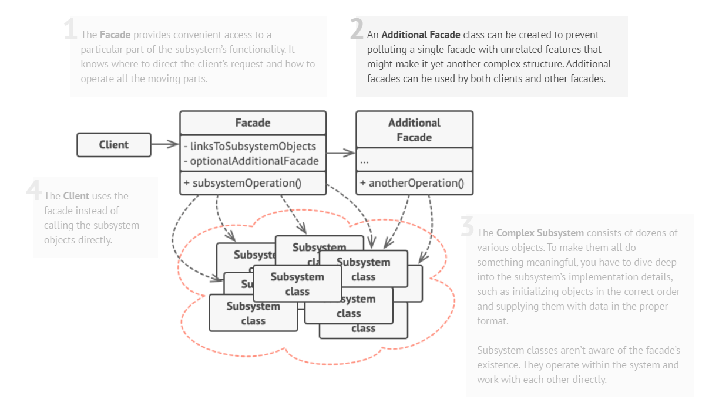

The Facade Design Pattern is a structural design pattern in software engineering. It provides a simplified, high-level interface to a set of interfaces in a subsystem, making it easier to use that subsystem. Essentially, it acts as a 'facade' or entry point to a more complex set of functionality, hiding the underlying complexity from the client code. This pattern promotes loose coupling between client code and the subsystem, making the code more maintainable and easier to understand.
Here's a detailed explanation of the Facade Design Pattern along with examples and notes:
The rationale for the Facade Design Pattern is grounded in several key principles and objectives, which make it a valuable and relevant pattern in software engineering. Here's the rationale for the Facade Design Pattern:
The Facade pattern typically involves the following components:
In this diagram:
The Facade acts as an intermediary that simplifies the interactions between the client and the subsystem, making the client's job easier and shielding it from the complexities of the subsystem's individual components. The client can access the Facade's operations without needing to understand the internal workings of the subsystem.
The provided UML below can be able to show how we may be able to use additional facades if necessary:
In summary, the Facade Design Pattern is a valuable tool for managing complexity, improving maintainability, and simplifying the usage of subsystems in software development. It provides a clear and consistent interface to clients, shielding them from the intricacies of the underlying system, and is particularly useful in cases where a system consists of multiple complex components or APIs.
The following is a complex code example:
In the e-commerce design, we need to manage a complex system that involves multiple subsystems, including product catalogs, shopping carts, and payment processing. These subsystems have their own interfaces and intricacies, making it challenging for client code (such as the user interface) to interact with the system as a whole. Additionally, changes to these subsystems should not impact the client code, and we want to ensure modularity and flexibility in the system.
The Facade Design Pattern provides a solution to the problem by offering a simplified, high-level interface to the e-commerce system. Here's how the pattern addresses the challenges:
Problem: When dealing with multiple subsystems, it can be challenging to coordinate and interact with them individually. This complexity can lead to errors and make the code difficult to maintain.
Solution: The Facade pattern simplifies this complexity by providing a single, unified interface to the client code. In our e-commerce design, the ECommerceFacade class acts as the facade, encapsulating interactions with subsystems such as the product catalog, shopping cart, and payment processing. Clients interact with the facade, reducing the need to understand the intricacies of each subsystem.
Problem: Client code should not need to know the internal details of the subsystems, as this can lead to tight coupling and code that's hard to maintain.
Solution: The Facade pattern hides the implementation details of the subsystems from the client code. It abstracts the interactions, allowing clients to work with a simplified, consistent interface. In our e-commerce design, the facade shields clients from the complexities of the product catalog, inventory management, and payment processing. Clients interact with the facade using high-level operations, without needing to understand the subsystems' inner workings.
Problem: The e-commerce system should allow changes and updates to subsystems without affecting the client code. It should support modularity and flexibility.
Solution: The Facade pattern allows subsystems to evolve independently. Clients interact with the facade, and changes or updates to subsystems do not impact client code as long as the facade's interface remains consistent. This ensures that you can modify product catalog, inventory management, or payment processing without affecting the overall e-commerce system.
In our e-commerce design, the ECommerceFacade serves as the entry point to the system. It abstracts the complexities of the product catalog, shopping cart, and payment processing, providing clients with a straightforward way to manage their shopping experience. Clients can add products to their cart, check out, and perform other operations without being concerned about the intricate details of the subsystems.
In summary, the Facade Design Pattern simplifies the e-commerce system, promotes loose coupling, and shields the client code from the complexities of subsystems. It enhances maintainability, modularity, and flexibility, making it an effective solution for managing the complexities of an e-commerce system.